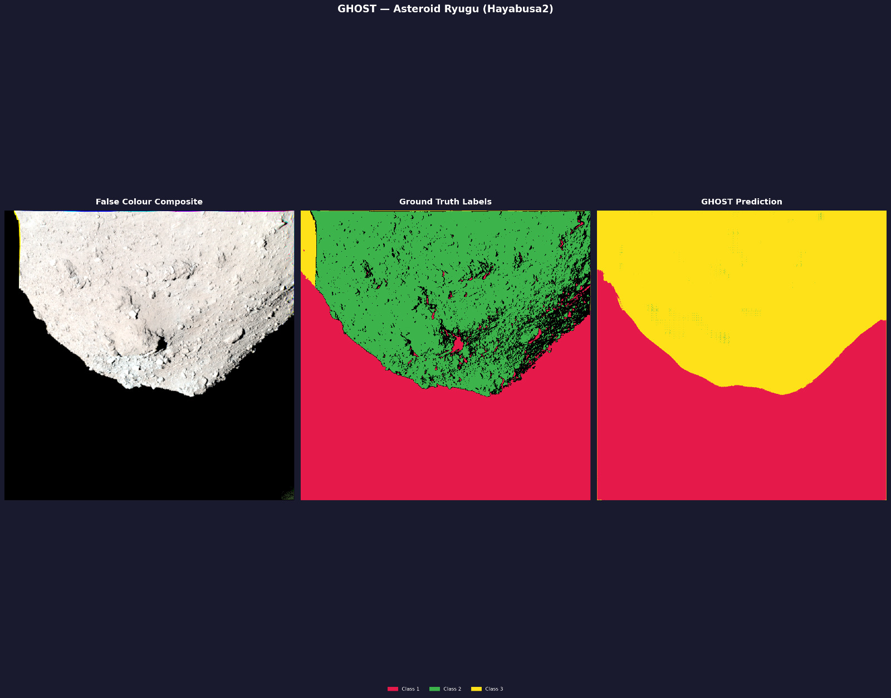
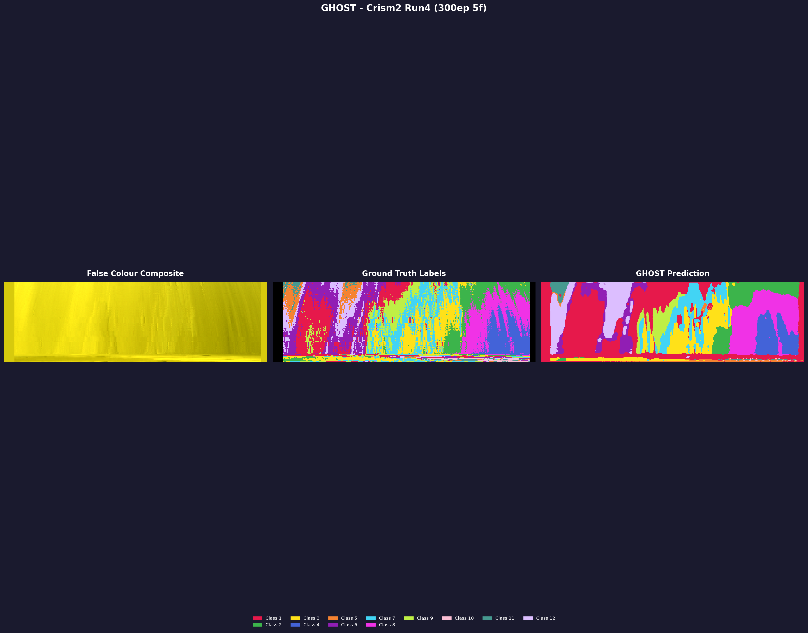

General Hyperspectral Observation and Segmentation Toolkit
Get hyperspectral intelligence out of the box.
No fine‑tuning • No augmentation • No pre‑processing • Near SOTA results
git clone https://github.com/IshuIsAwake/GHOST.git
cd GHOST
pip install -e .
ghost --help| Dataset | OA (%) | mIoU | Dice | Precision | Recall |
|---|---|---|---|---|---|
| Indian Pines | 94.49 | 0.7156 | 0.7399 | 0.7649 | 0.7308 |
| Pavia University | 85.85 | 0.6032 | 0.6685 | 0.8549 | 0.6797 |
| Salinas Valley | 92.10 | 0.7387 | 0.7840 | 0.9287 | 0.7843 |
* Results achieved with zero configuration: No fine-tuning, no augmentation, and no pre-processing. Straight out-of-the-box performance.
Tests were run at half the parameters with 6GB VRAM. Full capability yet to be explored.

Mapping surface morphology and mineralogical anomalies on Ryugu. GHOST segments high-reflectance boulders and hydrated minerals, aiding Hayabusa2 sampling site selection with zero manual parameterization.

High-resolution mineralogical mapping of the Martian surface. GHOST identifies phyllosilicates, olivine, and carbonates in MRO CRISM data, revealing the aqueous history of the Red Planet.
Recursive Spectral Splitting (RSSP) builds a dynamic "divide-and-conquer" hierarchy. It uses Continuum Removal and Spectral Angle Mapper (SAM) distance to group similar bands, allowing it to effectively manage Minority Imbalance—essentially giving every minority a chance to be a majority.
Defined as the process of normalizing away brightness and albedo to isolate intrinsic absorption features.
Uses geometric angle mapping to determine class similarity independent of reflectance magnitude, driving the recursive split.
Install the repository in editable mode to access all CLI features instantly.
git clone github.com/IshuIsAwake/GHOST
cd GHOST
pip install -e .Execute the core training logic optimized for the build-in Indian Pines dataset.
ghost train_rssp \
--data data/indian_pines/Indian_pines_corrected.mat \
--gt data/indian_pines/Indian_pines_gt.mat \
--routing hybrid \
--epochs 300 \
--out-dir runs/indian_pines \
--save rssp_models.pklApply the trained models to generate classification results instantly.
ghost predict \
--data data/indian_pines/Indian_pines_corrected.mat \
--model runs/indian_pines/rssp_models.pkl \
--routing allMap the spectral intelligence into high-fidelity visual representations.
ghost visualize \
--data data/indian_pines/Indian_pines_corrected.mat \
--dataset indian_pines \
--title "GHOST — Indian Pines"Need assistance with spectral mapping? Join our community or check the wiki.
Deep dive into the framework's core logic and spectral routing architecture.